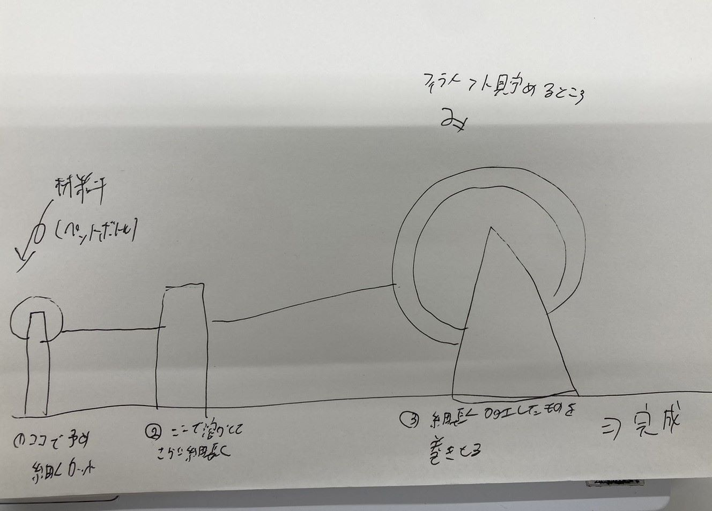

PROJECT NOTE
| プロジェクト概要 | ペットボトルは年間で254億本廃棄されています。またりサイクルするにも人件費などのコストがかかってしまいます。 こちらではペットボトルの本体を再利用する方法を考えていきます。 |
|---|---|
| 使用ツール |
|
| スケッチ |  |
| どのような特性を持つフィラメントができるのか | ペットボトルから生成するフィラメントはPET gというフィラメントに近しい特性を持つのではないかと思います。 PET gは、耐久性、耐衝撃性、耐化学薬品性に優れ、食品安全性も高いことから、機能性パーツや消耗品の製造に 適しています。また、PLAとABSの中間的な特性を持ち、印刷時の収縮や歪みが少なく、扱いやすいのも特徴です。 |


|
|
| 紹介動画 | 準備中... |
| 参考 |